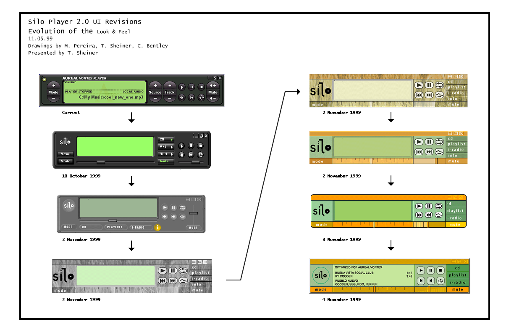
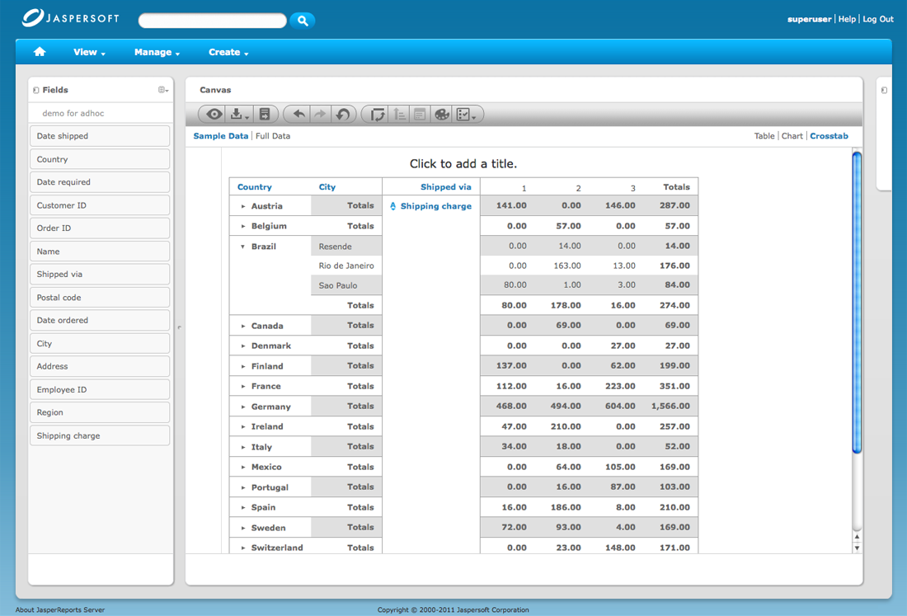

Hi! I'm Tim Sheiner.
I grew up in Mill Valley, California where I went to Tam High. I spent four years in Cambridge, Massachusetts at Harvard, a year traveling in Asia, then came home to do a Masters in Product Design at Stanford.
I've been living in San Francisco's Bernal Heights neighborhood for 25 years where my lovely wife Kelly and I raised our 3 boys, Benjamin, Jacob & Max. With them mostly out of the house now, Kelly & I get to spend more and more time at our other place in Salida, Colorado.

Personal
My hobbies are being outdoors, building stuff and writing about design.
Being outdoors is good. With family or friends is better.


A panorama of my pandemic projects: outdoor kitchen, studio, pavers (post family reunion 2021)

I'm working on a series of articles I plan to publish in a book as The Designer's Field Guide

Origin Story
In 1991 I graduated from Stanford with a Master's in Product Design.
The name of the program I attended has evolved; the philosophy of radical creativity has stayed constant.

After graduation I worked for a medical products start up for 4 years.
I designed the product, the packaging, the assembly machinery and learned how to work with the FDA.


In 1995 I started designing for the World Wide Web.
LINC was the name of my design consultancy; we designed and built "intranets."


I sold my business to a music start up, then became a design director at Schwab.
A music player that didn't look like a car radio was revolutionary
Pre-iTunes, we wanted to be iTunes

Here I learned to think about risk

Next was several years immersed in drug development, statistics, modeling, simulation, the management of complexity and a lot more about risk.
I was designer of everything here, including marketing presentations

I introduced image and narrative as tools to communicate our offering

Technical illustrations helped product strategy discussions

An interface that tried to visualize scenario risk

An interface for managing a system of related models

An interface for building models

Recently, I've worked in both the consumer and open-source enterprise software design space.
I worked at the Apple Online Store

Jaspersoft makes open source data reporting software
